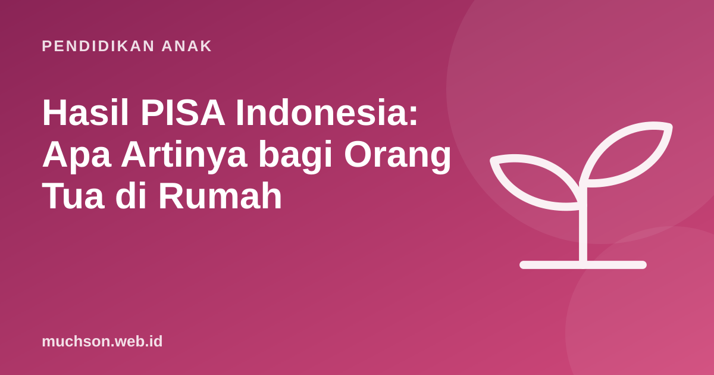

Beranda › Artikel › Pendidikan Anak
Pendidikan AnakHasil PISA Indonesia: Apa Artinya bagi Orang Tua di Rumah
Setiap kali hasil PISA diumumkan, berita pendidikan Indonesia ramai. Skor yang rendah sering dibahas, tetapi jarang dijelaskan apa artinya bagi keluarga. Artikel ini menjelaskan apa itu PISA, apa yang ditunjukkan hasil terakhirnya, dan langkah sederhana yang bisa dilakukan orang tua tanpa menunggu perubahan kebijakan.

Apa itu PISA?
PISA (Programme for International Student Assessment) adalah asesmen internasional yang diselenggarakan OECD setiap beberapa tahun untuk siswa berusia 15 tahun. PISA tidak menguji hafalan kurikulum, melainkan kemampuan memakai pengetahuan untuk memecahkan masalah sehari-hari dalam tiga ranah: matematika, membaca, dan sains.
Contoh gaya soal PISA: membandingkan dua paket data seluler untuk menentukan mana yang lebih hemat sesuai kebutuhan, atau menilai apakah sebuah klaim di artikel didukung data. Kemampuannya: membaca informasi, menalar, dan mengambil keputusan.
Hasil PISA 2022 Indonesia dalam angka sederhana
Catatan negara OECD untuk Indonesia menyebut hasil 2022 di ketiga ranah turun dibanding 2018, dan berada di antara yang terendah yang pernah diukur PISA untuk Indonesia. Cara paling mudah memahaminya adalah melihat persentase siswa yang mencapai Level 2, tingkat kemampuan dasar yang dianggap minimum untuk berpartisipasi penuh dalam kehidupan modern.
Artinya, sekitar 8 dari 10 siswa Indonesia usia 15 tahun belum mencapai kemampuan dasar matematika, misalnya menafsirkan dan mengenali bagaimana situasi sederhana bisa dinyatakan secara matematis. Di membaca, sekitar 3 dari 4 siswa belum mencapai tingkat dasar, seperti menemukan gagasan utama teks berukuran sedang.
Pemerintah juga mencatat bahwa pengukuran berlangsung tidak lama setelah pandemi, dan peringkat relatif Indonesia sedikit naik dibanding 2018 karena banyak negara juga mengalami penurunan. Namun bagi orang tua, angka kemampuan dasar di atas adalah pesan yang paling penting.
Apa artinya bagi keluarga?
Hasil PISA tidak menilai anak Anda secara pribadi, dan banyak faktornya berada di tingkat sistem. Tetapi ada pola yang konsisten dari riset pendidikan: kebiasaan di rumah ikut memengaruhi kemampuan membaca dan bernalar. Berikut yang bisa dilakukan, disusun dari yang paling mudah:
| Ranah | Kebiasaan di rumah | Usaha |
|---|---|---|
| Membaca | Membaca bersama 15 menit sehari dan membahas isinya | Rendah |
| Membaca | Bertanya "apa gagasan utamanya?" dan "apa buktinya?" | Rendah |
| Matematika | Melibatkan anak dalam belanja, memasak, dan merencanakan anggaran | Rendah |
| Matematika | Bertanya "bagaimana kamu tahu?" saat anak menjawab soal | Rendah |
| Sains | Melakukan eksperimen dapur dan menebak hasil sebelum mencoba | Sedang |
| Penalaran | Permainan logika, teka-teki, dan coding | Sedang |
Latihan bergaya PISA untuk anak SD
Bernalar lewat coding
PISA juga mulai menilai berpikir kreatif dan pemecahan masalah. Coding adalah salah satu kegiatan yang melatih kemampuan ini secara langsung: anak membaca tujuan, menyusun langkah, menguji, lalu memperbaiki. Konsep matematika seperti koordinat, sudut, dan bilangan negatif juga hadir secara alami. Di Indonesia, pemerintah bahkan menambahkan mata pelajaran pilihan Koding dan Kecerdasan Artifisial mulai 2025/2026.
Anda tidak perlu menunggu sekolah. Coba bersama anak lewat dua pelajaran gratis PixelKode, lalu lanjutkan kebiasaan membaca dan bernalar di rumah. Perubahan besar sering dimulai dari kebiasaan kecil yang konsisten.
Tanya jawab
Apa itu PISA?
Bagaimana hasil PISA Indonesia 2022?
Apakah hasil PISA mencerminkan anak saya?
Apa yang bisa dilakukan orang tua?
Sumber dan bacaan lanjut
- OECD: PISA 2022 Results (Volume I and II), catatan negara Indonesia
- Antara: Koding dan AI masuk Kurikulum 2025/2026
- AAP (2014). Literacy Promotion